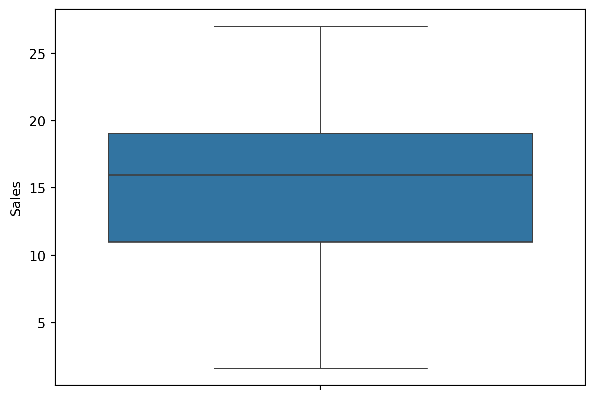
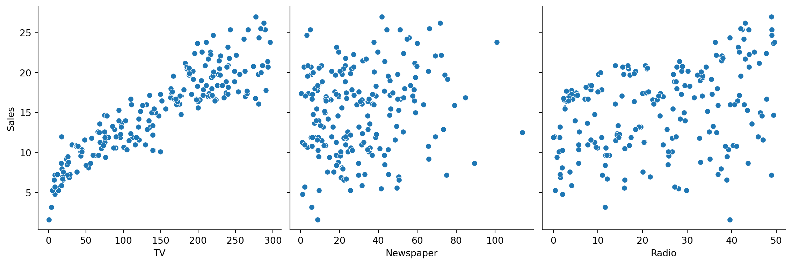
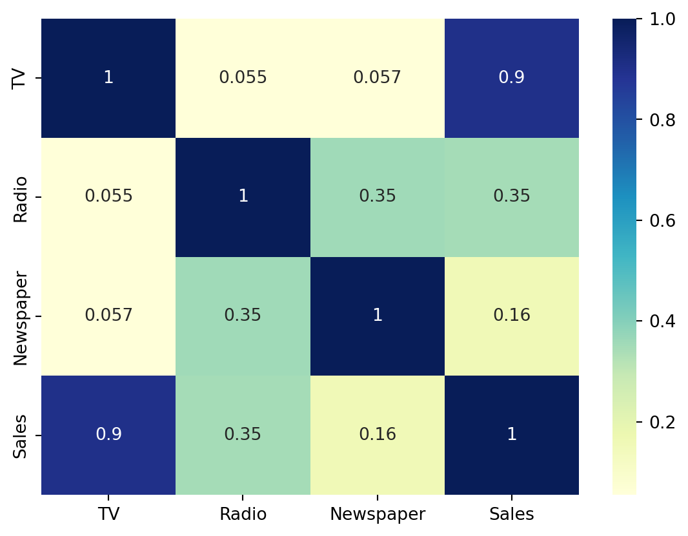
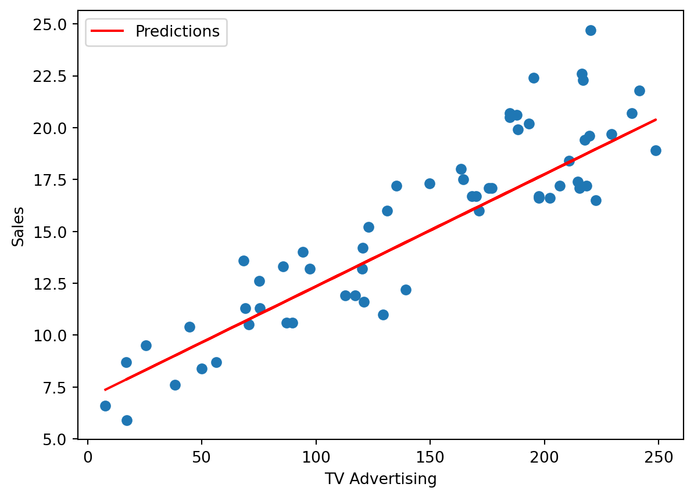
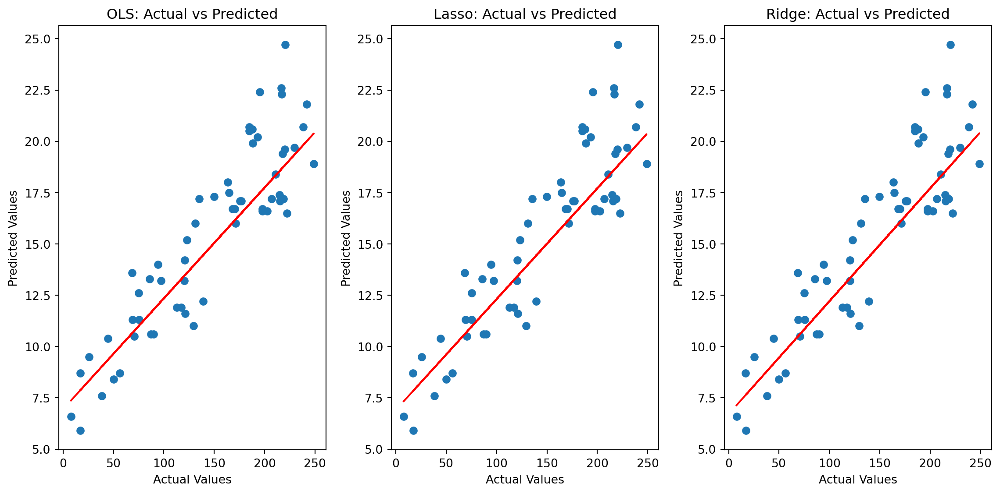
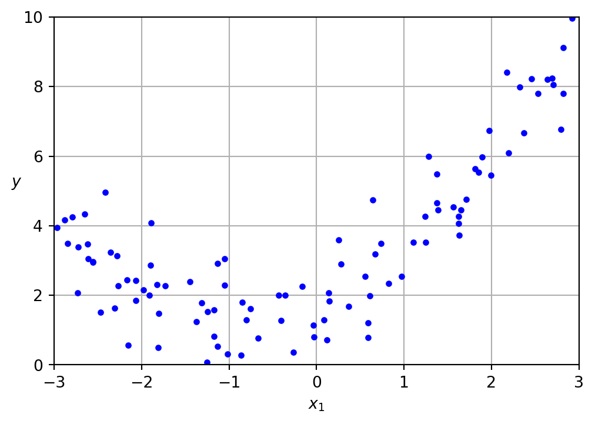

Regression is a statistical technique used to model the relationship between a dependent variable and one or more independent variables. The goal is to understand and quantify the impact of the independent variables on the dependent variable. Regression analysis is widely employed in various fields, including economics, finance, biology, and machine learning, to make predictions, infer relationships, and understand patterns within data. The most fundamental form of regression is linear regression, where the relationship between variables is assumed to be linear. However, when the relationship is more complex and cannot be adequately captured by a straight line, non-linear regression models are employed.
Linear regression assumes a linear relationship between the independent and dependent variables. The model equation is represented as a linear combination of the independent variables and an ε which is the error term. The coefficients represent the slope or impact of each independent variable on the dependent variable. Linear regression is straightforward, interpretable, and computationally efficient, making it a commonly used method. However, it may not capture complex, non-linear relationships effectively.
Non-linear regression allows for more flexibility in modeling relationships that are not linear. The model equation is more complex and may involve non-linear functions, such as exponentials, logarithms, polynomials, or trigonometric functions. This flexibility enables non-linear regression to better represent curved or intricate patterns in the data. Non-linear regression models are particularly useful when the relationship between variables is better described by a curve, wave, or other non-linear shapes. While non-linear regression introduces more complexity, it requires careful consideration of model selection, and the interpretation of parameters may not be as intuitive as in linear regression. Various techniques, such as gradient descent or optimization algorithms, are employed to estimate the parameters of non-linear models from data.
Linear Regression
Linear Regression is a supervised machine learning algorithm used for predicting a continuous outcome variable (dependent variable) based on one or more predictor variables (independent variables). The basic idea is to find the best-fit straight line that minimizes the difference between the observed and predicted values.
Simple Linear Regression
For a simple linear regression with one independent variable:
\[
y = \beta_0 + \beta_1x + \epsilon
\]
\(y\): Dependent variable (the variable we want to predict) \(x\): Independent variable (predictor variable) \(\beta_0\): Intercept (y-intercept), the value of y when x=0 \(\beta_1\): Slope (gradient), represents the change in y for a unit change in x \(\epsilon\): Error term, represents the unobserved factors affecting y
The objective is to minimize the sum of squared differences between the observed (y) and predicted (y^) values:
We choose the “Advertising” dataset from Kaggle where we want to analyze the relationship between “TV Advertising” and “Sales”.
import numpy as npimport pandas as pdimport matplotlib.pyplot as pltfrom sklearn.model_selection import train_test_splitfrom sklearn.linear_model import LinearRegressionfrom sklearn.metrics import mean_squared_error# Load the datasetdata = pd.read_csv('advertising.csv')data.head()
TV
Radio
Newspaper
Sales
0
230.1
37.8
69.2
22.1
1
44.5
39.3
45.1
10.4
2
17.2
45.9
69.3
12.0
3
151.5
41.3
58.5
16.5
4
180.8
10.8
58.4
17.9
We perform exploratory data analysis (EDA) on the data to understand the characteristics of the data, unveil patterns, detect anomalies, and gather insights that can guide subsequent analyses and modeling. We perform data wrangling, where the important steps include data cleaning by removal null-values and outliers.
data.describe()
TV
Radio
Newspaper
Sales
count
200.000000
200.000000
200.000000
200.000000
mean
147.042500
23.264000
30.554000
15.130500
std
85.854236
14.846809
21.778621
5.283892
min
0.700000
0.000000
0.300000
1.600000
25%
74.375000
9.975000
12.750000
11.000000
50%
149.750000
22.900000
25.750000
16.000000
75%
218.825000
36.525000
45.100000
19.050000
max
296.400000
49.600000
114.000000
27.000000
Outliers in a dataset are often identified as points that fall beyond a specified distance from the edges of the box and whiskers. This distance is typically determined by a multiplier of the IQR, and data points beyond this range are considered potential outliers.
import seaborn as sns# Checking for outlierssns.boxplot(data['Sales'])plt.show()

Then we look at the feature interdependence using pairplots and the heatmap of the correlation between the different variables.
# Sales relation with other variables using scatter plot.sns.pairplot(data, x_vars=['TV', 'Newspaper', 'Radio'], y_vars='Sales', height=4, aspect=1, kind='scatter')plt.show()# correlation between different variables.sns.heatmap(data.corr(), cmap="YlGnBu", annot =True)plt.show()


As is visible from the pairplot and the heatmap, the variable TV seems to be most correlated with Sales. So let’s go ahead and perform simple linear regression using TV as our feature variable.
We need to split our variable into training and testing sets. We’ll accomplish this by utilizing the train_test_split function from the sklearn.model_selection library. It’s customary to allocate 70% of the data to our training dataset, leaving the remaining 30% for the test dataset. By default, we fit a line on the dataset that passes through the origin using the statsmodels library. However, to introduce an intercept, we must manually utilize the add_constant attribute of statsmodels. Once we’ve added the constant to our X_train dataset, we can proceed to fit a regression line using the OLS (Ordinary Least Squares) attribute of statsmodels, as demonstrated below.
from sklearn.model_selection import train_test_splitimport statsmodels.api as smfrom sklearn.linear_model import LinearRegression, Lasso, RidgeX = data['TV']y = data['Sales']X_train, X_test, y_train, y_test = train_test_split(X, y, train_size =0.7, test_size =0.3, random_state =100)# Adding a constant to get an interceptX_train_sm = sm.add_constant(X_train)# Fitting the resgressionlr = sm.OLS(y_train, X_train_sm).fit()print(lr.summary())
The key metrics in the summary that we note to see if the Linear Regression is a good fit are the following,
R-squared: Indicates the proportion of the variance in the dependent variable that is predictable from the independent variables. A higher R-squared value suggests a better fit.
p-value: The p-value associated with the t-statistic. The t-statistic tests the null hypothesis that the coefficient is equal to zero. A high absolute t-value and a low associated p-value suggest that the variable is significant. A low p-value (typically less than 0.05) suggests that the variable is statistically significant.
We can see from the above metrics that the fit is significant. So we visualize how well our model has fit the data by plotting the Line given by the fitted slope and intercept and see how it fits our data’s scatter plot.
The fit of the Linear Regression model can also be tested by seeing if the residual errors are normally distributed with zero mean and unit variance. We can see below that the residual distribution is normal as expected.
These models need to be also evaluated on a test set that they were not exposed to while training, to understand if there is any overfitting or underfitting that has occurred due to bias and variance.
X_test_sm = sm.add_constant(X_test)# Predict the y values corresponding to X_test_smy_pred = lr.predict(X_test_sm)plt.scatter(X_test, y_test)plt.plot(X_test, 6.948+0.054* X_test, 'r', label="Predictions")plt.legend(loc="upper left")plt.xlabel('TV Advertising')plt.ylabel('Sales')plt.show()

We can see that our model performs well on the test set as well, making it robust and generalizable to new data that it has not been exposed during training process.
Regularized Linear Regression Models
Lasso Regression, or L1 regularization, is a linear regression technique that includes a penalty term in the cost function equivalent to the absolute values of the coefficients. This penalty encourages sparsity in the model, meaning it tends to force some of the coefficient estimates to be exactly zero. The regularization term is controlled by a hyperparameter, usually denoted as α. A higher α leads to a stronger regularization effect. Lasso regression is particularly useful when dealing with datasets with a large number of features, as it can automatically perform feature selection by setting some coefficients to zero, effectively ignoring less relevant predictors.
from sklearn.model_selection import train_test_splitfrom sklearn.linear_model import LinearRegression, Lasso, RidgeX = data['TV']y = data['Sales']X_train, X_test, y_train, y_test = train_test_split(X, y, train_size =0.7, test_size =0.3, random_state =100)# Ordinary Least Squares (OLS)ols_model = sm.OLS(y_train, sm.add_constant(X_train)).fit()ols_pred = ols_model.predict(sm.add_constant(X_test))# Lasso Regression with statsmodelslasso_model = sm.OLS(y_train, sm.add_constant(X_train)).fit_regularized(alpha=0.01, L1_wt=1) # L1_wt=1 for Lassolasso_pred = lasso_model.predict(sm.add_constant(X_test))print(lasso_model.params)
const 6.913375
TV 0.054717
dtype: float64
Ridge Regression, or L2 regularization, is another variant of linear regression that includes a penalty term proportional to the squared values of the coefficients in the cost function. Similar to Lasso, Ridge introduces regularization controlled by a hyperparameter α. Ridge tends to shrink the coefficients towards zero but rarely sets them exactly to zero. It is effective in mitigating the issue of multicollinearity, where predictor variables are highly correlated. Ridge can stabilize the model and prevent it from being too sensitive to variations in the input data.
from sklearn.model_selection import train_test_splitfrom sklearn.linear_model import Lasso, RidgeX = data['TV']y = data['Sales']X_train, X_test, y_train, y_test = train_test_split(X, y, train_size =0.7, test_size =0.3, random_state =100)# Ridge Regression with statsmodelsridge_model = sm.OLS(y_train, sm.add_constant(X_train)).fit_regularized(alpha=0.01, L1_wt=0) # L1_wt=0 for Ridgeridge_pred = ridge_model.predict(sm.add_constant(X_test))print(ridge_model.params)
[6.71059051 0.05570333]
# Compare performance using Mean Squared Errormse_ols = np.mean((y_test - ols_pred)**2)mse_lasso = np.mean((y_test - lasso_pred)**2)mse_ridge = np.mean((y_test - ridge_pred)**2)print(f'Mean Squared Error (OLS): {mse_ols}')print(f'Mean Squared Error (Lasso): {mse_lasso}')print(f'Mean Squared Error (Ridge): {mse_ridge}')# Visualizing actual vs predicted valuesplt.figure(figsize=(12, 6))# Plot for OLSplt.subplot(1, 3, 1)plt.scatter(X_test, y_test)plt.plot(X_test, 6.948+ X_test*0.054, 'r', label="Predictions")plt.title('OLS: Actual vs Predicted')plt.xlabel('Actual Values')plt.ylabel('Predicted Values')# Plot for Lassoplt.subplot(1, 3, 2)plt.scatter(X_test, y_test)plt.plot(X_test, 6.913+ X_test *0.054, 'r', label="Predictions")plt.title('Lasso: Actual vs Predicted')plt.xlabel('Actual Values')plt.ylabel('Predicted Values')# Plot for Ridgeplt.subplot(1, 3, 3)plt.scatter(X_test, y_test)plt.plot(X_test, 6.710+0.055* X_test, 'r', label="Predictions")plt.title('Ridge: Actual vs Predicted')plt.xlabel('Actual Values')plt.ylabel('Predicted Values')plt.tight_layout()plt.show()
Mean Squared Error (OLS): 4.077556371826953
Mean Squared Error (Lasso): 4.08097078389324
Mean Squared Error (Ridge): 4.109361428273981

In this example, We’ve used the fit_regularized method from statsmodels with the L1 penalty (L1_wt=1) for Lasso regression and the L2 penalty (L1_wt=0) for Ridge regression. The performance is then compared using Mean Squared Error, and the scatter plots visualize the actual vs predicted values for each model. We can adjust the regularization strength (alpha) as needed, we are able to see the MSE is least for OLS case itself.
Non-Linear Regression
Non-linear regression allows for more flexibility in modeling relationships that are not linear. The model equation is more complex and may involve non-linear functions, such as exponentials, logarithms, polynomials, or trigonometric functions. This flexibility enables non-linear regression to better represent curved or intricate patterns in the data. Non-linear regression models are particularly useful when the relationship between variables is better described by a curve, wave, or other non-linear shapes.
Polynomial Regression
Polynomial regression is an extension of linear regression, allowing for the modeling of relationships that are not strictly linear. While linear regression assumes a linear relationship between the independent and dependent variables, polynomial regression accommodates curves and non-linear patterns. In polynomial regression, the relationship is represented by a polynomial equation, allowing for more flexibility in capturing complex patterns within the data.
The polynomial regression equation of degree n is given by: \[
y = \beta_0 + \beta_1 x + \beta_2 x^2 + \ldots + \beta_n x^n + \epsilon
\] Here, \(y\) is the dependent variable, \(x\) is the independent variable, \(\beta_0\) is the intercept, \(\beta_1,\beta_2,…,\beta_n\) are the coefficients, \(x^n\) represents the terms with increasing powers of and \(\epsilon\) is the error term.
The coefficients are estimated from the data using methods like the method of least squares. We create a synthetic polynomial dataset to see how well the regressor is able to fit the polynomial function we have defined. We can see that the scatter plot below shows the data to be quadratic in nature as defined by our function y.
np.random.seed(42)m =100X =6* np.random.rand(m, 1) -3y =0.5* X **2+ X +2+ np.random.randn(m, 1)
plt.figure(figsize=(6, 4))plt.plot(X, y, "b.")plt.xlabel("$x_1$")plt.ylabel("$y$", rotation=0)plt.axis([-3, 3, 0, 10])plt.grid()plt.show()

This example generates a quadratic dataset and fits a second-degree polynomial using scikit-learn. We can adjust the degree parameter in PolynomialFeatures to experiment with different polynomial degrees. We need to expand the features by adding columns for X2,X3,…,Xn up to the desired degree n. We use a linear regression algorithm to fit the polynomial equation to the expanded polynomial features. This involves estimating the coefficients b1,b2,…,bn that minimize the sum of squared differences between the observed and predicted values.
Once the model is trained, we use it to make predictions on new or unseen data. We can assess the performance of the model using appropriate metrics such as Mean Squared Error (MSE) or R-squared. We can visualize the fitted polynomial curve along with the data points to understand how well the model captures the underlying patterns.
The choice of the degree n is crucial. A too high degree may lead to overfitting, capturing noise in the data rather than the actual trend. Here we test for three different degrees [1,2,100] and see how it changes the fit and how well its able to capture the noisy points and outliers.
Linear regression is a fundamental tool for modeling relationships between variables through a linear equation. Lasso and Ridge regression, extensions of linear regression, introduce regularization to address issues like multicollinearity and overfitting. Lasso promotes sparsity, while Ridge penalizes large coefficients. Non-linear regression accommodates complex relationships. Linear regression is versatile, Lasso/Ridge are valuable for feature selection and regularization, and non-linear regression suits intricate data patterns. Applications include predicting house prices (linear), genomics (Lasso/Ridge), and modeling complex processes (non-linear). The choice depends on data characteristics and analysis goals.